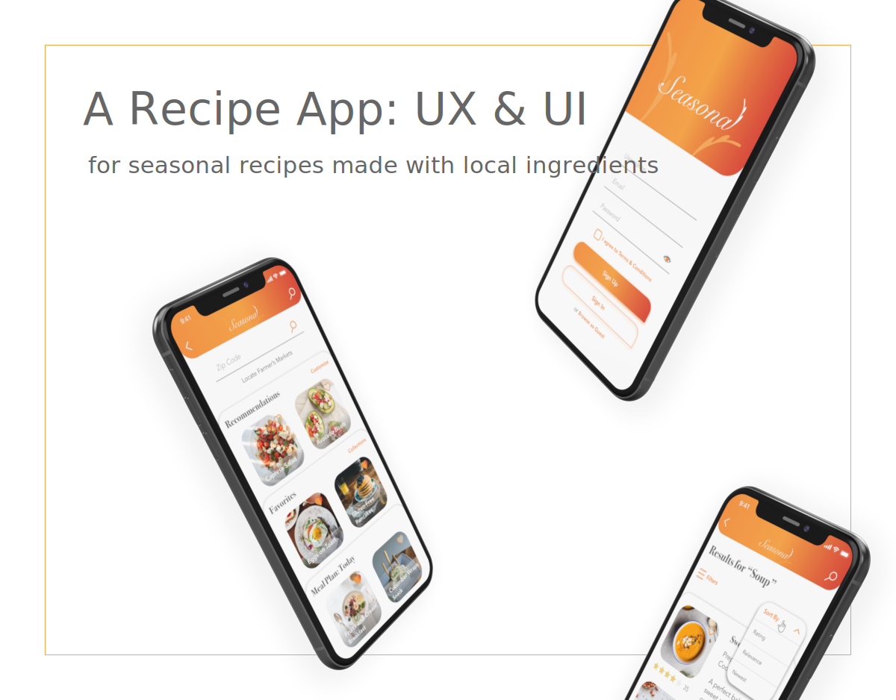
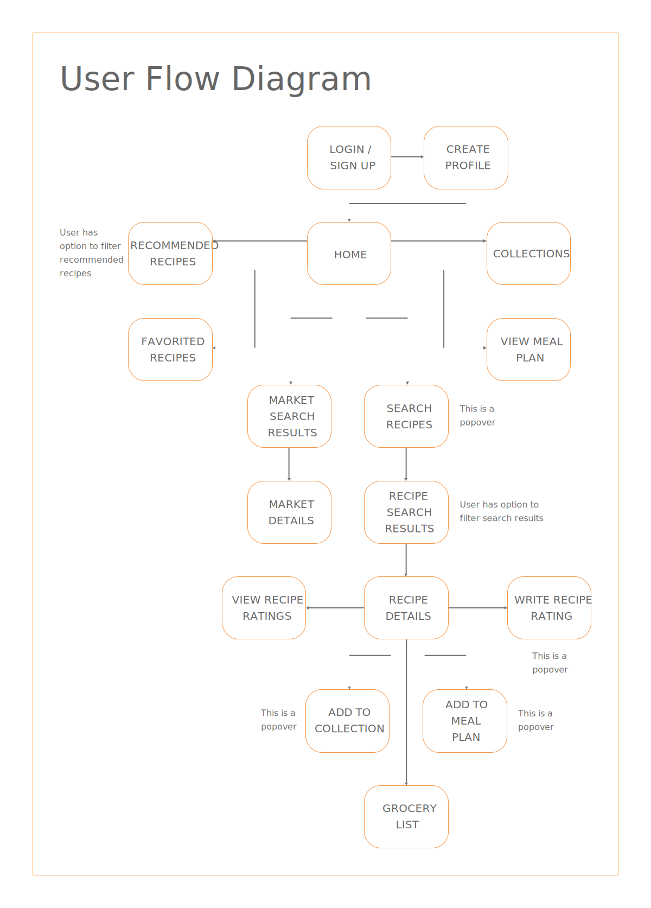
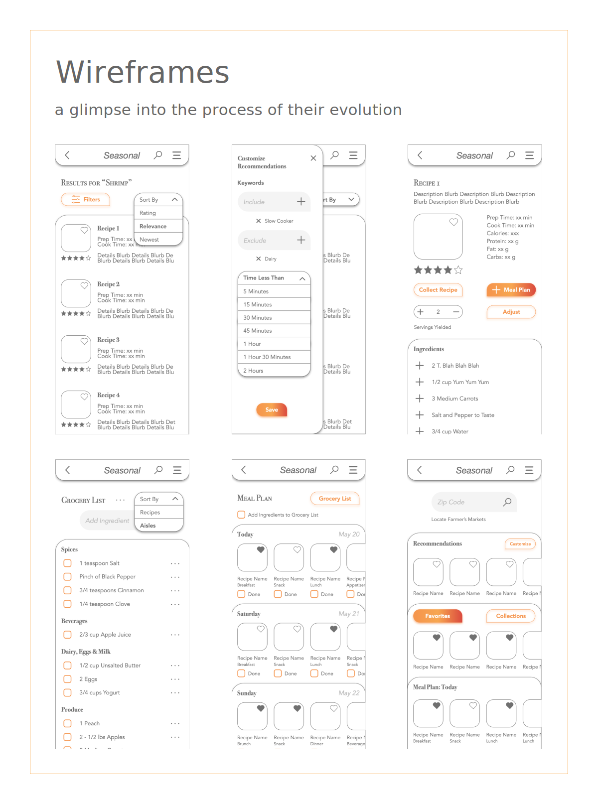
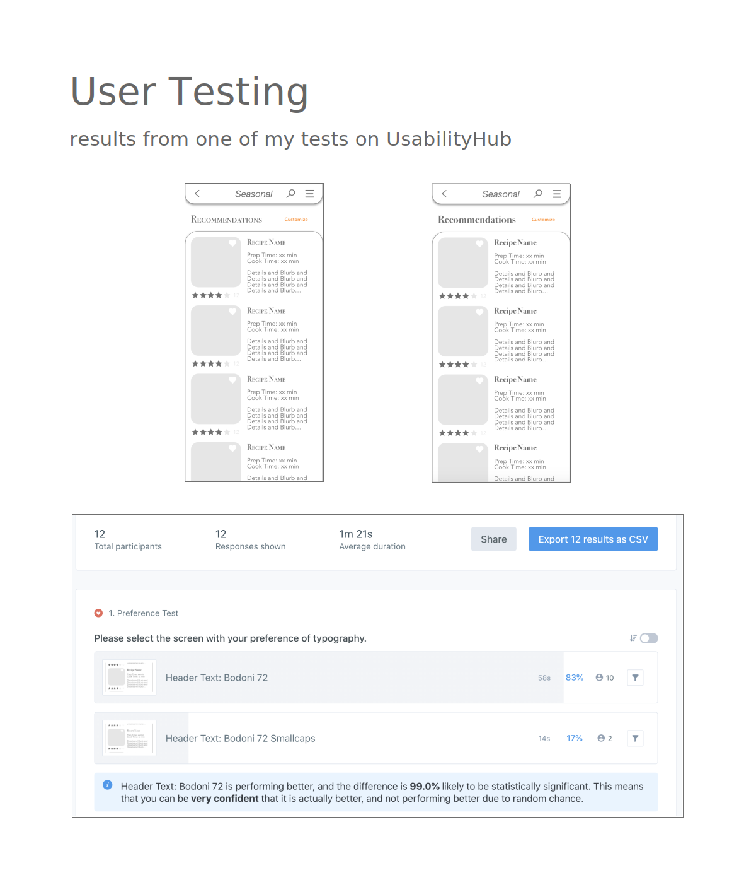

Seasonal
I was tasked with creating a recipe app as part of my CareerFoundry curriculum. My objective was to design a responsive web app for recipes that meets the needs of its users and solves the problems they are facing with existing recipe apps. I decided to create a solution that supports local economies by providing recipes using solely seasonal ingredients, and including a feature that informs users of their local Farmer's Markets. Seasonal was my first big design project, and I executed both the UX and UI for this mobile app.
My Approach
Competitive Analysis
I selected 3 successful and popular competitors to analyze in order to determine which user needs remained unmet in the realm of recipe apps. With the problem identified, I started the process of defining and designing the unique solution.
View the Competitive Analysis here.
Research Learning Spiral
In order to define and design my solution, I utilized the Research Learning Spiral template, building my app’s foundation with knowledge.
View the Research Learning Spiral deliverable here.


User Personas
To provide myself a compass in case I ever lost sight of the big picture amongst the many small details, I created 3 different user personas.
Gathering Requirements
Next I outlined my user stories and deduced the feature requirements of each story. I determined my JTBD, my MVP, and finally my hypothesis.
View the Gathering Requirements deliverable here.
User Flow Diagram
I consolidated my user stories into one User Flow Diagram.

Rapid Prototyping
Referring to my User Flow Diagram, I did some rapid prototyping using the Crazy 8s method, and ended up with the beginnings of my app’s screens.
Usability Test
I took my paper screens to InVision to create a test that would help me determine the usability of my current flow. With the feedback I received from my testers, I was able to make the necessary tweaks and move into the UI design portion of creation with confidence.
View the Usability Test results here.

Style Guide
After setting the stage with the UX processes, I sought design inspiration by browsing designs of existing recipe apps, and designs displayed on platforms like Dribbble and Behance. Once inspired, I selected three descriptive words to give me direction—“sunny,” “leaves,” and “lively”—and then put together a style guide.
Low- & Mid-Fidelity Wireframes
I then created the blueprints of the app keeping in mind all of the features necessary to satisfy my decided upon solution, and usability.
User Testing & Refine
Taking my wireframes over to UsabilityHub, I reached out to potential users and asked them to help me better my design with some tests. With these results I improved my design and defined the app’s style taking direction from my style guide.

Responsive Design
Now with high-fidelity wireframes, I was ready to define and design the different breakpoints of a few select screens.
View the critique here.
Seek Critique
I took what I had to some fellow CareerFoundry students and we exchanged critique on our respective projects, seeking to better our own designs and communication skills.
View the critique here.

Finalize Design
From the critique I recieved, I made the final tweaks to my project.
Retrospective
What was Successful
I am usually resistant to loud, bright colors, for they can easily overwhelm. For this project, however, I went for it, as I wanted to step out of my comfort zone. I feel I was able to successfully balance the bold with white space and by using simple and clean design techniques in all other areas of the design. Although, in future iterations I’ll likely change the icons so that they do not also contain the bright gradient.
I am also pleased with how thorough I was about creating all of the different screens that I found necessary for the purposes of this app. It would have been easy to cut a few out to keep this project a bit smaller, but I have always shown great attention to detail and this ability shone through here. My attention to detail is both a strength and a weakness at times, as I often need to be strict with myself on time-management due to it, so that I do not take too long on any one thing. In this experience, though, and with how much I learned as a very new designer, it payed off.
What to Improve
This was only my second project ever, and I certainly learned a lot. Looking back I would do the navigation differently. For example, only having one grocery list link from the detailed recipe view screens is inconvenient. I would include a tab bar or collapsible side navigation in future iterations.
As mentioned above, I would also change the icons containing the bright gradients to something more simple and less bright.